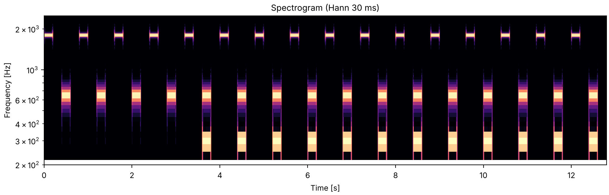

A far above the chord
Listen for the high tone A and the upper tone B of the chord: can you keep hearing the alternating A B A B of the opening (the standard) once the low tone C joins B? Here A is at 1800 Hz, far above B, and the booklet expects B to fuse with C into one richer tone that alternates with a pure A. The next two sounds bring A closer to B.
Bregman & Ahad, Demonstration 25, a pattern discussed in Bregman (1990). Pure tones of equal amplitude: B at 650 Hz and C at 300 Hz always, and A at 1800, 1200 or 650 Hz in the three examples. Tones and the silences between them are 200 ms long, the tones with 10 ms rise and decay, so the cycle is A, silence, B and C together, silence. Four cycles of the standard (A and B alone) come first, as in the booklet, then six of the full pattern, where the booklet plays twelve. The booklet reports that the closer A is to B, the more easily B is heard going with A rather than with C.
cc1_a_far_above_the_chord.flac, 8.0 s, mono

Code
CYCLE = 0.8
def capture(a, b=650, c=300, c_delay=0.0, n_standard=4, n_full=6):
"""The A, B-and-C cycle after its A-B standard; C starts and stops `c_delay` seconds after B."""
events = []
for k in range(n_standard + n_full):
start = CYCLE * k
events += [(start, tone(a, 0.2)), (start + 0.4, tone(b, 0.2))]
if k >= n_standard:
events.append((start + 0.4 + c_delay, tone(c, 0.2)))
return place(events, dur=CYCLE * (n_standard + n_full))
sound = finish(capture(1800))
fig, playhead = show(sound, fmin=200, fmax=2500)